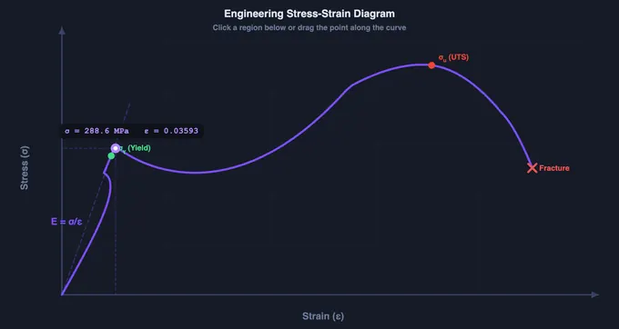
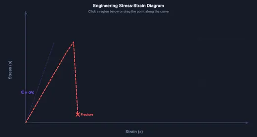
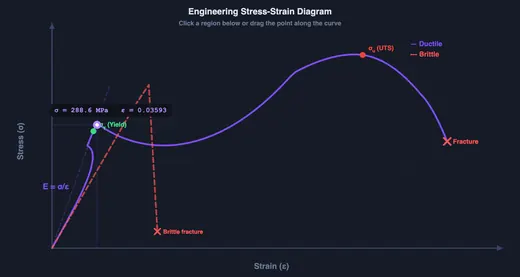

Stress-Strain Curve Diagram Explained
Hooke's Law • Yield • UTS • Material Properties — Learn • Explore • Practice • Quiz
3D Model — SOM: Stress-Strain Diagram
Interactive 3D model of this apparatus. Pick a component on the right, then drag to rotate · scroll to zoom · right-drag to pan.
Stress-Strain Curve Regions
Click any region below to highlight it on the diagram. Drag the purple dot along the curve to see live σ and ε values.
1 Overview
Welcome to the Stress-Strain Diagram Trainer — a free, browser-based interactive tool for learning how materials respond to applied forces. This simulator is designed for mechanical engineering students, materials science learners, engineering education vocational students, and instructors teaching strength of materials.
The tool covers the complete stress-strain curve from elastic deformation through yield, strain hardening, necking, and fracture. You can explore ductile and brittle material behaviours side by side, study 15 key material concepts with formulas and worked examples, and test your understanding through practice problems and a quiz.
2 Setting Up the Load Case
- Learn mode (default) — The stress-strain curve is displayed on the canvas. Click any labelled region (Elastic, Yield, Strain Hardening, Necking, Fracture) to highlight it and read a description below.
- Drag the purple dot along the curve to read live σ (stress) and ε (strain) values at any point.
- Use the Material toggle to switch between Ductile, Brittle, or Both views.
- Switch modes using the pill tabs at the top: Learn, Explore, Practice, Quiz.
3 Learn Mode — Interactive Curve
In Learn mode, the canvas displays a standard engineering stress-strain diagram with clearly labelled regions:
- Elastic Region — Linear portion where Hooke's Law applies (σ = Eε). Material returns to original shape when load removed.
- Yield Point — Stress at which permanent deformation begins. For mild steel, distinct upper and lower yield points are visible.
- Strain Hardening — Material strengthens as dislocations multiply. Stress increases with strain until UTS.
- Necking — Beyond UTS, localised thinning occurs. Engineering stress drops while true stress continues to rise.
- Fracture — Final failure point. Ductile materials show cup-and-cone fracture; brittle materials break cleanly.
Ductile vs Brittle: Toggle the material selector to compare. Ductile materials (steel, copper, aluminium) show extensive plastic deformation. Brittle materials (cast iron, glass, ceramics) fracture suddenly with minimal plasticity.
4 Explore Mode — 15 Concepts
Explore mode provides a reference library of 15 material science concepts organised into three categories:
| Category | Concepts |
|---|---|
| Properties | Stress (σ), Strain (ε), Young's Modulus (E), Poisson's Ratio (ν), Resilience, Toughness |
| Curve Points | Proportional Limit, Elastic Limit, Yield Stress (σy), UTS, 0.2% Proof Stress, Necking, Fracture |
| Design | Factor of Safety (FoS), Ductile Material, Brittle Material |
Each concept card shows: formula, units, description, and a worked example with step-by-step calculation.
5 Practice Mode
Practice mode generates random numeric problems covering:
- Stress calculation (F/A)
- Strain calculation (ΔL/L)
- Young's Modulus from stress-strain data
- Poisson's Ratio (ν = −εlat/εaxial)
- Factor of Safety (σy/σworking)
- Resilience and Toughness
- 0.2% Proof Stress determination
Type your answer in the input box and click Check Answer. The simulator uses tolerance-based validation (±2%) — answers within tolerance are marked correct. After checking, a step-by-step solution is revealed. Your running score (correct/total) is tracked in the practice bar.
6 Quiz Mode
Quiz mode presents 5 randomly selected questions from a pool of 15+ questions. The mix includes:
- Multiple choice (MCQ) — click the correct option
- Numeric — type a value (tolerance-based checking)
After answering all 5 questions, a result panel shows your score with star rating:
- 5/5 — 5 gold stars (☆☆☆☆☆)
- 3–4 — green stars
- 0–2 — red stars
A detailed breakdown shows each question with your answer and the correct answer. Click New Quiz to try again with different questions.
7 Tips & Best Practices
- Start with Learn mode — drag the purple dot across the entire curve to build intuition before studying formulas.
- Compare materials — switch to "Both" view to see ductile and brittle curves overlaid. Notice how ductile materials have much larger strain at fracture.
- Use Explore before Practice — review the worked examples in Explore mode, then try similar problems in Practice mode.
- Remember key formulas: σ = F/A, ε = ΔL/L, E = σ/ε, FoS = σy/σw
- Units matter — Stress is in MPa (N/mm²), Strain is dimensionless (mm/mm), Young's Modulus is in GPa.
- Engineering vs True stress — This simulator uses engineering stress (σ = F/A0). True stress accounts for changing cross-section and is always higher after necking begins.
Understanding Stress-Strain Diagrams — Free Interactive Trainer

A stress-strain diagram plots engineering stress (σ = F/A0) against engineering strain (ε = ΔL/L0) from a tensile test. It reveals Young’s modulus (elastic slope), yield strength (onset of plastic deformation), ultimate tensile strength (peak stress), and fracture point. The curve shape determines whether a material is ductile or brittle.
The stress-strain diagram is one of the most fundamental tools in mechanical engineering and materials science. It describes how a material responds to applied forces, revealing critical properties such as stiffness, strength, ductility, and toughness. This free interactive trainer lets you explore every region of the curve, study 15 key concepts with formulas and worked examples, and test your knowledge through practice problems and a quiz.
Hooke's Law & the Elastic Region
In the initial linear portion of the curve, Hooke's Law applies: stress is directly proportional to strain (σ = Eε). The slope of this line equals Young's Modulus (E), which measures the material's stiffness. Steel has E ≈ 200 GPa, while aluminium is about 70 GPa. The material returns to its original shape when the load is removed — this is elastic behaviour.
Yield Stress, UTS & Fracture
Beyond the elastic limit, the material begins to deform permanently. The yield stress (σy) marks this transition. For mild steel, a distinct upper and lower yield point is visible. After yielding, strain hardening strengthens the material until it reaches the Ultimate Tensile Stress (UTS) — the peak of the curve. Beyond UTS, necking occurs (a localised reduction in cross-section), and eventually the material fractures.


Ductile vs Brittle Materials
Ductile materials (mild steel, copper, aluminium) show a long plastic region with significant elongation before fracture. Brittle materials (cast iron, glass, ceramics) fracture suddenly with little or no plastic deformation — their stress-strain curve is nearly linear until a sharp break. Use the material toggle above to compare both curves side by side.
Key Concepts Covered
This trainer covers 15 essential concepts: Stress, Strain, Young's Modulus, Poisson's Ratio, Proportional Limit, Elastic Limit, Yield Stress, UTS, 0.2% Proof Stress, Necking, Factor of Safety, Resilience, Toughness, Ductile Material, and Brittle Material. Each concept includes a formula, units, description, and a worked example calculation.
How to Use This Trainer
Start in Learn mode to explore the stress-strain curve interactively — click regions to highlight them, drag the purple dot along the curve to read live σ and ε values, and toggle between ductile, brittle, and both views. Switch to Explore mode to study all 15 concepts with mini-diagrams and example calculations. Use Practice mode to solve random numeric problems (stress, strain, modulus, FoS calculations) with step-by-step solutions. Finally, take the Quiz — 5 mixed questions (MCQ + numeric) with a scored result panel.
Mechanical Properties of Common Engineering Materials
| Material | Young's Modulus (GPa) | Yield Strength (MPa) | UTS (MPa) | Elongation (%) |
|---|---|---|---|---|
| Mild Steel (AISI 1020) | 200 | 250 | 400 | 25 |
| Stainless Steel (304) | 193 | 215 | 505 | 40 |
| Aluminium (6061-T6) | 69 | 276 | 310 | 12 |
| Copper (C11000) | 117 | 69 | 220 | 45 |
| Cast Iron (Gray) | 100 | — | 200 | <1 |
| Brass (C26000) | 110 | 95 | 340 | 55 |
| Titanium (Ti-6Al-4V) | 114 | 880 | 950 | 14 |
Values are typical and vary with heat treatment, composition, and testing conditions. Young’s modulus (E) measures stiffness, yield strength marks the onset of permanent deformation, UTS is the maximum stress before necking, and elongation indicates ductility.
Key Stress-Strain Formulas
| Property | Formula | Units |
|---|---|---|
| Engineering stress | σ = F / A0 | MPa (N/mm²) |
| Engineering strain | ε = ΔL / L0 | Dimensionless (mm/mm) |
| Young’s modulus | E = σ / ε | GPa |
| Resilience | Ur = σy² / 2E | MJ/m³ |
| Poisson’s ratio | ν = −εlateral / εaxial | Dimensionless |
Reading a Real Mild-Steel Curve — Five Landmarks That Matter
Pull a tensile specimen of mild steel (low-carbon, ~0.2% C) in the simulator and the curve traces a path no other engineering material draws quite the same way:
- Origin to A — Proportional limit (σpl ≈ 200 MPa). A straight line with slope E (Young’s modulus ≈ 200 GPa). Above this point the stress-strain relation stops being exactly linear, but elastic behaviour persists.
- A to B — Elastic limit (σel ≈ 220 MPa). The largest stress that produces no measurable permanent strain on unloading. In undergraduate practice we treat σpl ≈ σel; in calibration-grade work the difference is microns of permanent strain.
- B to C — Upper and lower yield (σy ≈ 250 MPa). The curve drops slightly, then plateaus and even oscillates — a characteristic of mild steel called yield plateau. The dislocation pile-up at carbon-atom obstacles releases suddenly. This kink is absent in aluminium alloys and stainless steels, which is why those need the 0.2% offset method below.
- C to D — Strain hardening (σ rises to UTS ≈ 400 MPa). Dislocations multiply and entangle, the material gets stronger. The curve climbs but at decreasing slope.
- D to E — Necking and fracture. At UTS, a local cross-section starts to thin (necking). True stress in the neck continues to climb but engineering stress — load divided by original area — falls. The curve descends to fracture at εf ≈ 0.25−0.35 strain (25−35% elongation).
The total area under the curve from origin to fracture is toughness — the energy absorbed per unit volume before failure. For mild steel it is roughly 50−100 MJ/m³. A high-carbon steel of the same UTS but smaller elongation has lower toughness even though it has the same strength.
The 0.2% Offset Method — Defining Yield When the Curve Has No Plateau
Aluminium, brass, copper, stainless steel, and most non-ferrous alloys lack the mild-steel yield plateau — the curve flows smoothly from elastic to plastic with no clear knee. To pin a number to yield strength, engineers use the 0.2% offset method from ASTM E8:
- Draw the elastic line through the origin with slope E (the linear portion of the curve).
- Translate this line to the right by ε = 0.002 (0.2% strain) so it now passes through (0.002, 0) instead of (0, 0).
- The intersection of this offset line with the stress−strain curve is the 0.2% proof stress — the conventional yield strength σ0.2.
For 6061-T6 aluminium, σ0.2 ≈ 275 MPa and UTS ≈ 310 MPa. Without the offset convention this material would have no “yield strength” at all; with it, fits in the same design framework as mild steel. The simulator’s Material selector switches between curve shapes — toggle aluminium to see how the 0.2% offset line is drawn automatically.
Ductile, Brittle, Polymer — Three Curve Shapes Side by Side
| Class | Example | Curve shape | Elongation at fracture | Failure mode |
|---|---|---|---|---|
| Ductile metal | Mild steel, aluminium, copper | Elastic line → yield → long plastic plateau → necking → cup-and-cone fracture | 15−40% | Slip on close-packed planes; high toughness |
| Brittle ceramic / cast iron | Grey cast iron, concrete, alumina | Almost linear, fracture before any visible yielding | < 2% | Cleavage on weak planes; very low toughness |
| Thermoplastic polymer | Polypropylene, polyethylene | Non-linear elastic; cold-draw plateau; sometimes strain hardens before tearing | 50−500% | Chain alignment → cold-draw → orientation hardening |
| Elastomer (rubber) | Vulcanised natural rubber | Highly non-linear S-shape; large recoverable strains | 200−600% | Entropic; almost entirely reversible up to fracture |
The same UTS does not imply the same usability. A brittle cast iron at UTS 250 MPa is a poor structural choice because it fails without warning; a ductile mild steel at the same UTS gives visible warning (sag, neck) before fracture. This is why pressure-vessel codes require ductile materials with minimum elongation thresholds.
Common Lab Errors — Why Your UTM Curve Does Not Match the Book
- Wrong gauge length. Elongation depends on gauge length; the standard ratio is L0 = 5.65√A0 (ISO 6892) for proportional specimens. Using L0 = 50 mm on a non-standard specimen gives an “A” value you cannot compare with published data.
- Strain measured from machine crosshead, not extensometer. Crosshead displacement includes machine compliance and grip slip; the apparent E will be 30−50% low. Always use an attached extensometer for elastic-region work.
- Strain rate not controlled. Strain rate affects yield stress: faster pull → higher σy. ASTM E8 specifies 0.015±0.006 mm/mm per minute for the elastic range, with looser control in the plastic range.
- Grip slip mistaken for plastic strain. If the specimen looks loose at the grips after the test, the first part of the curve may be slip not real elongation. Wedge grips with proper bite resolve this.
- Necking ignored in true-stress calculation. Engineering stress falls after UTS, but true stress σtrue = F/Ainstantaneous continues to rise. For metal forming calculations you must convert.
Standards and References
- ASTM E8/E8M-21 — Standard Test Methods for Tension Testing of Metallic Materials. The American baseline for tensile tests.
- ISO 6892-1:2019 — Metallic materials — Tensile testing — Part 1: Method of test at room temperature. The international (and European) equivalent.
- IS 1608:2018 — the Indian standard, widely used in Indian polytechnics and aligned with ISO 6892.
- Callister, W. D. — Materials Science and Engineering: An Introduction, 10th ed., Chapter 6 (Mechanical Properties of Metals).
- Dieter, G. E. — Mechanical Metallurgy, 3rd ed., for the true-stress true-strain treatment and the dislocation theory behind yield phenomena.
Explore Related Simulators
If you found this Stress–Strain Curve simulator helpful, explore our Universal Testing Machine simulator, Hooke’s Law simulator, Impact Testing simulator, Mohr’s Circle simulator, Thermal Expansion Calculator, and the Sheet Metal Bend Radius Calculator, where the same ductility that sets elongation also sets the minimum bend radius.